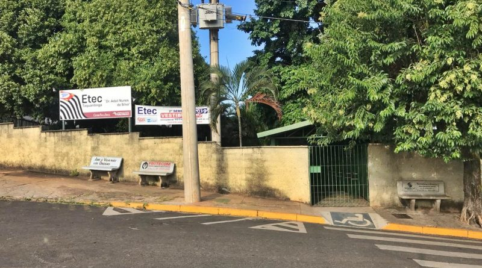

27 janeiro de 2020
Primeiro Dia na área de TI

Neste dia, iniciei meus estudos no universo da tecnologia e programação, ancioso como nunca mas, feliz por estar numa área que gosto muito, através do Curso Técnico em Desenvolvimento de Sistemas, AMS (Articulação Médio Superior), uma parceria da Etec "Dr. Adail Nunes da Silva" com a Faculdade de Tecnologia de Taquaritinga - Fatec, onde fui aluno da Etec por 3 anos. 😀
15 a 21 de maio de 2023
<nlw/> SPACETIME
Nesta semana, participei da Next Level Week, evento no qual tive a oportunidade de fazer novos amigos, atráves da comunidade do evento no aplicativo Discord, de aprender mais com o Mayk Brito e Rodrigo Gonçalves e de desenvolver uma "cápsula do tempo", contando um pouquinho sobre os principais acontecimentos da minha jornada como Dev. 🌎 🚀